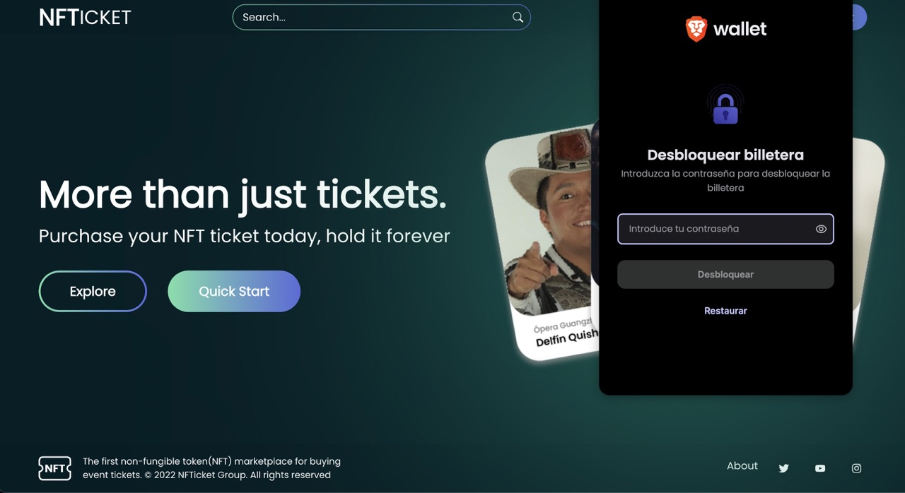
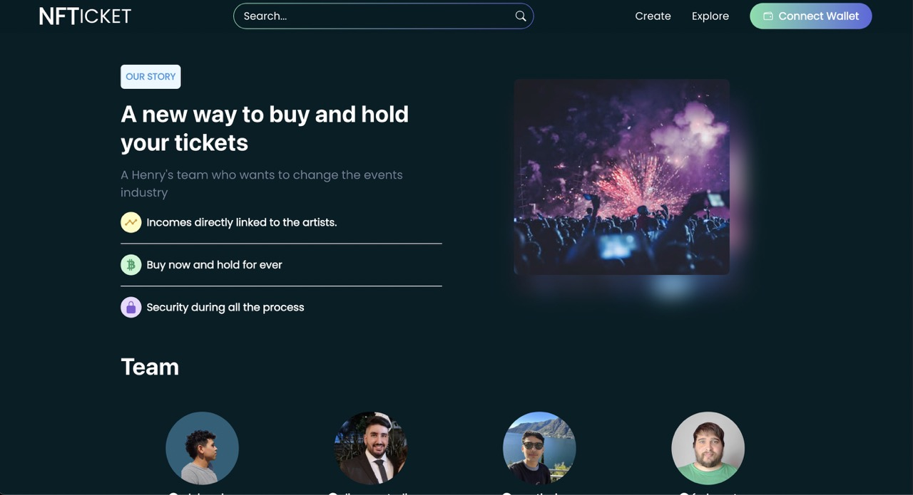
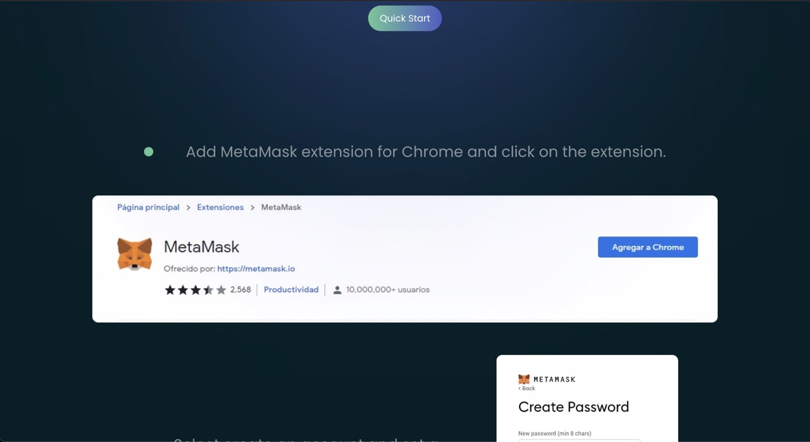

NFTicket
Revolutionizing Event Ticketing with Blockchain
NFTickets was a cutting-edge marketplace aimed to transform the way tickets are bought, sold, and managed. Built on blockchain technology, the platform delivered tickets as NFTs, ensuring security, transparency, and authenticity. As a front-end developer behind this project, I aimed to redefine the event experience by combining blockchain innovation with a user-centric approach.
- 
- 
- 
The platform allowed users to explore, search, and select events across music, theater, and sports, while also empowering them to upload their own events to the blockchain. This dynamic feature fostered a community-driven ecosystem where event organizers and attendees alike benefited from seamless ticket management. By leveraging the unique properties of NFTs, NFTickets eliminated counterfeit tickets and introduced new possibilities for ticket resale, ownership and collecting.
On this project, I focused on front-end development, connecting the app to the MetaMask wallet to enable secure user authentication and transactions. I implemented features to retrieve ticket information directly from the blockchain and managed the transaction process for purchasing NFT tickets. These integrations ensured a seamless and reliable experience for users navigating the decentralized system.
This was the final group project for my Fullstack bootcamp in 2022. Unfortunately, the backend appears to be down, so the live app is not working properly.
You can still visit it here or find my profile in the Team section